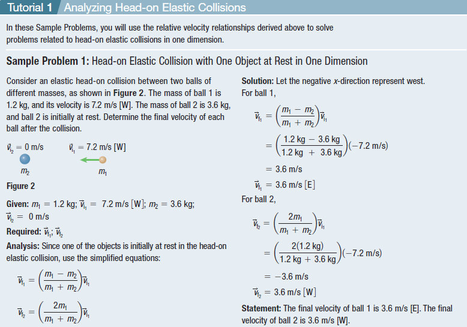
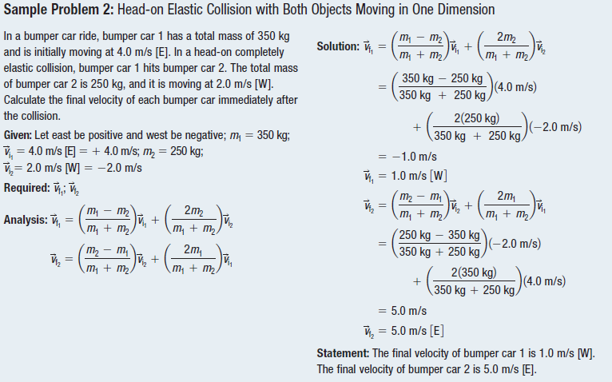

Head-on Elastic Collisions
In a head-on elastic collision between a small projectile and a much more massive target, the projectile will bounce back with essentially the same speed and the massive target will be given a very small velocity. One example is a ball bouncing back from the Earth when we throw it down.
Perfectly Elastic Head-on Collisions in One Dimension
A head-on elastic collision is an impact in which two objects approach each other from opposite directions; momentum and kinetic energy are conserved after the collision

Solving one-dimensional collisions is compressed in this video. You can watch it to fully understand the concept.
Two identical objects (such as billiard balls) have a one-dimensional collision in which one is initially motionless. After the collision, the moving object is stationary, and the other moves at the same speed as the other originally had. Show that both momentum and kinetic energy are conserved.

Analyzing Head-on Elastic Collision


Practice
A ball of mass 80.0 g is moving at 7.0 m/s [W] when it undergoes a head-on elastic collision with a stationary ball of mass 60.0 g. Assume the collision is one-dimensional. Calculate the velocity of each ball after the collision.